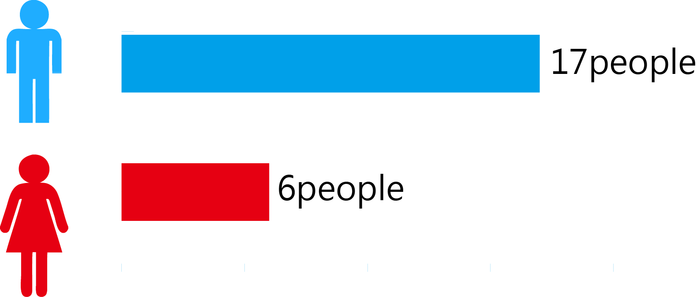
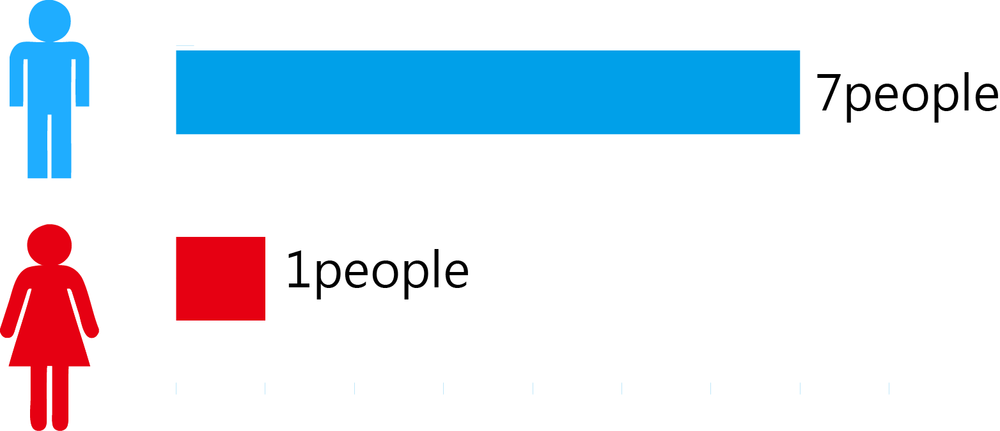
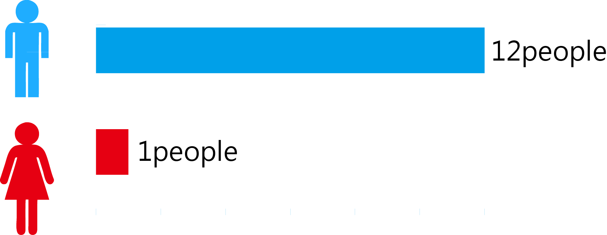
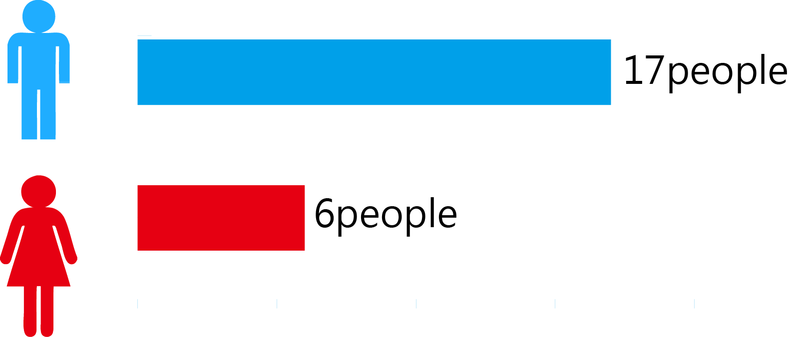
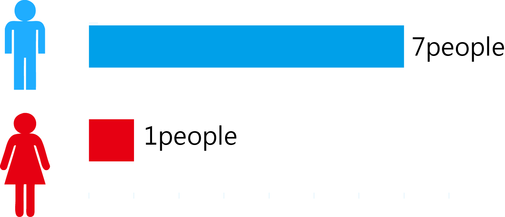
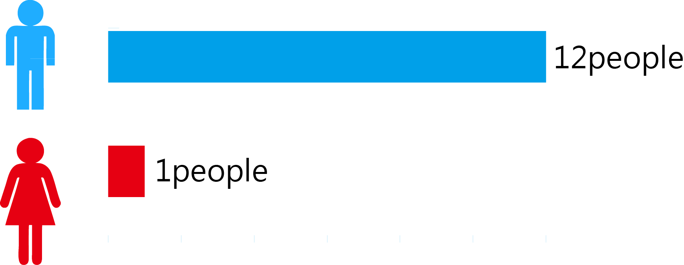

It is said that Taiwan’s women get more power in politics. To see how women perform in congress and the differences between male and female legislators, we can first look at the seats distributed in congress. Move the arrow to see the 3 rd to 8 th terms legislators elected from districts.
Ps. The voting system has changed since the 7th term; therefore, the seats reduced 50%.
8 th


 




